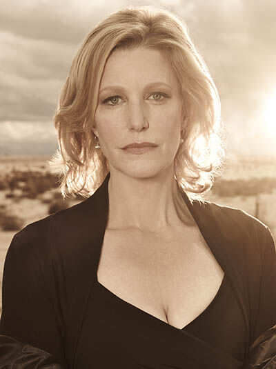
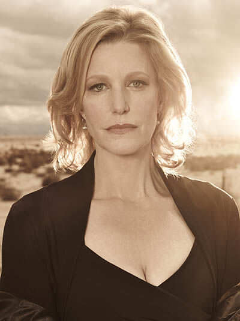

Breaking Bad
Es una serie de televisión estadounidense creada y producida por Vince Gilligan. Situada y producida en Albuquerque, Nuevo México, consiste en la historia de Walter White, un profesor de química al que diagnostican un cáncer de pulmón inoperable. Walter pasa a una vida de crimen produciendo y distribuyendo metanfetamina junto a un ex-estudiante, Jesse Pinkman, con el objetivo de conseguir suficiente dinero para el futuro de su familia tras su inevitable muerte.

 
